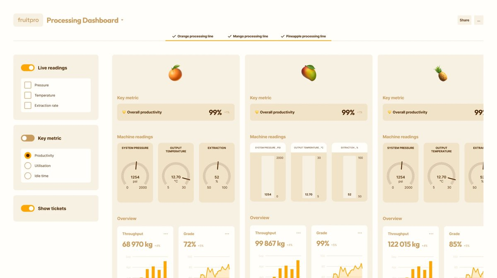
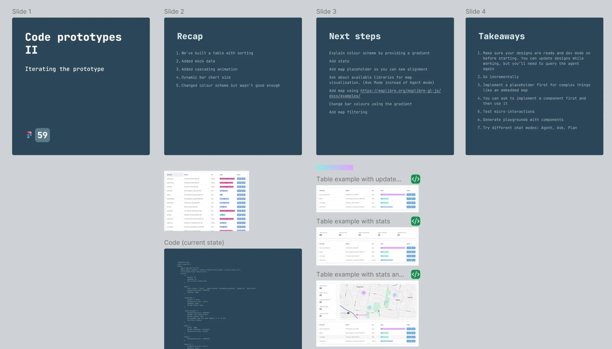

Figma & AI enablement
The problem
Figma ships new features almost every month, and AI tools are changing how designs become prototypes and code. A team of about 50 designers across several cities and countries needed to keep up without each person working it out alone.
The solution
A recurring series of advanced prototyping sessions, run since 2022: 68 so far. They range from auto layout and everyday tricks to mixed-mode prototyping with VS Code and Cursor alongside Figma: building journey maps automatically, filling existing designs with real data, making animations and saving time by using automations.
Results
- sessions since 2022
- 68
- designers across the APAC team
- ~50
- guest speakers
- ~10
My role
Wrote all session content, ran sessions. Organised guest speakers: developers showing agentic development built on our Figma designs, and designers showing how they changed their workflows for advanced prototyping. For some speakers it was their first time presenting to the community:
I still remember when you invited me to join the AI + Design workshop and share how AI could help us prototype and bring design and development closer together. […] it was actually the first time I really realised how meaningful it can be to share what we’ve learned and discovered with others.
Process highlights: sharing what I learned on projects
Many sessions came straight from client work. When a project needed a new technique, I built it there first, then turned it into a session so the whole team could reuse it.
On a large education client, there was little documentation of how many tasks an admin role actually carried. We collected data from internal documents, checklists, guidelines, onboarding materials and personal trackers, went through the major systems, mapped every task onto the project lifecycle and built a small coded calendar prototype to show how overlapping projects pile up. That technique became session 68, Populating calendar with data scraping.
See the workload model in the education case study →
On the same project, the deliverables went through many rounds of updates. To show stakeholders how much our understanding of the user had changed between phases, I compared the preliminary Miro synthesis with the final branded journey map and highlighted every difference. That became session 62, Diff.
Sessions
- 1Auto layout I
- 2Auto layout II
- 3Loop animations
- 4Auto layout III
- 5Design ops I
- 6Design systems I
- 6aDev hand-off
- 7Design systems II
- 8Design systems support
- 9Figma and accessibility
- 10Responsive layouts
- 11–12Nesting and hierarchy
- 13Connections
- 14Presentations
- 15Variables I: Styling
- 16Tables
- 17Variants I: Setup and editing
- 18Variants II: Animations
- 19Nested animations and multi-edit
- 20Scrolling and sticking
- 21Parallax
- 22Variables II: Prototyping
- 23Variables III: Conditions
- 24Variables IV: Filters
- 25New release overview
- 26Bento grids I
- 27Responsive prototype mode
- 28Breakpoints I
- 29Breakpoints II: Variable modes
- 30Maps / 2D animations
- 31Typography I
- 32Typography II: Variables
- 33Responsive grids
- 34Typography III: Variables
- 35Variables V: Expressions
- –2024 Wrapped
- 36Tokens (crash course)
- 37Replacing components
- 38GenAI placeholder data
- 39Guest lesson
- 40Block wrapping
- 41Fancy props
- 42Nested animation
- 43Grid
- 44Buzz
- 45Draw
- 46Guest lesson
- 47–50Components refresher
- 51Guest lesson
- 52Guest lesson
- 53Guest lesson
- 54Styles refresher
- 552025 Recap
- 56Grids and fractional units
- 57Guest lesson
- 58Code prototyping I
- 59Code prototyping II
- 60Slots
- 61Automated UJM with branding
- 62Diff
- 63Guest lesson
- 64Grids update
- 65Make with shared styles
- 66Generate plugins
- 67Motion
- 68Populating calendar with data scraping

Variables II: Prototyping
Code prototyping IIWhat people said
Daria led the building and evolving of our Design, Figma and AI prototyping capability across a large national team of designers.
You have single-handedly raised everyone’s skillsets in continually showcasing the latest and greatest in Figma and vibe-coding.
Even though I’m all the way in Brissie, the Figma learning sessions always made me feel like I was part of the broader design community across cities.
Your Figma sessions have also been so helpful and interesting (there’s always something I didn’t know it could do).
I’ve always looked forward to the Figma learning sessions and think you’re such a powerhouse.
Special shout out to the great funny example content you come up with for your Figma sessions!
Thank you for […] encouraging the use of all of Figma’s new fancy features and debugging my Figma files when things go horribly wrong with components.